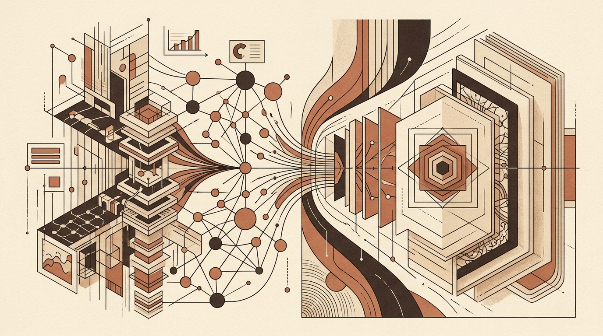

Architectural Enhancements in GraphRAG and Convolutional Attention
Data science practices continue to refine how models process complex relational data and visual representations. Recent updates focus on architectural patterns that enhance retrieval performance for large language models as well as fine-grained attention mechanisms within deep learning frameworks for computer vision.
Graph-based retrieval-augmented generation (GraphRAG) extends standard vector search by incorporating knowledge graphs alongside semantic embeddings. Moving beyond entry-level implementations, modern workflows require production-oriented patterns that effectively combine knowledge graph structures, vector stores, and large language model reasoning to handle complex queries.
In vision architectures, attention mechanisms remain a primary tool for feature refinement. The Convolutional Block Attention Module (CBAM) applies a double-attention strategy—sequentially addressing channel and spatial dimensions—to improve representation quality in convolutional networks, offering a practical reference point for implementing custom PyTorch modules.
- GraphRAG: A Practitioner's Guide to 6 Advanced Architectural Patterns: Explores six production-oriented architectures that integrate semantic search, knowledge graphs, and language model reasoning for advanced retrieval applications.
- CBAM Paper Walkthrough: The Double-Attention Mechanism: Demonstrates how to understand and implement the Convolutional Block Attention Module from scratch using PyTorch.
Original feed: Towards Data Science